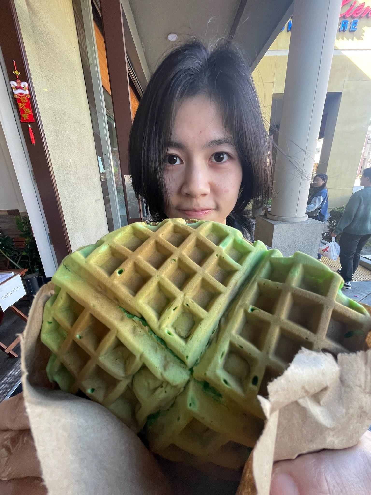
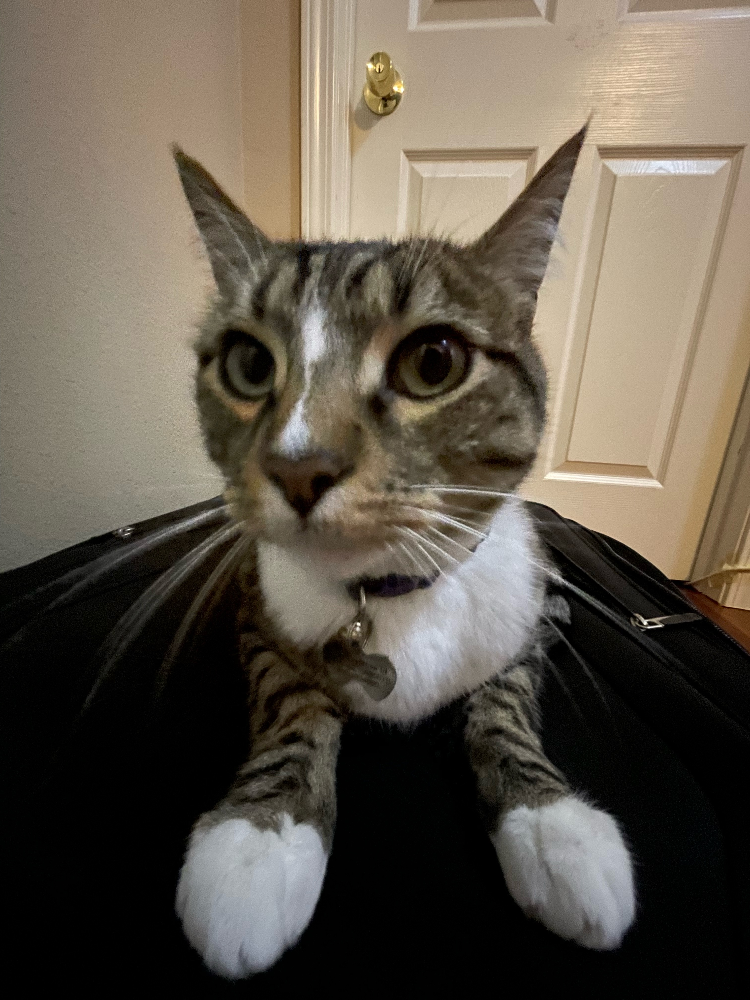

Isabelle's Homepage

About Me
Hello! My name is Isabelle (she/they) and I'm a 2nd year AGPM major and also trying to add a FDM double major. In my free time I love drawing (I also make keychains/prints/stickers!), cooking, playing video games (OW, Valorant, Marvel Rivals, HSR, etc.), exploring town by myself, and watching c-dramas. I also want to pursue character design and or/concept artist roles in the future!

I love red pandas and cats, and I have a gray tabby cat named Tabby! He's the best.